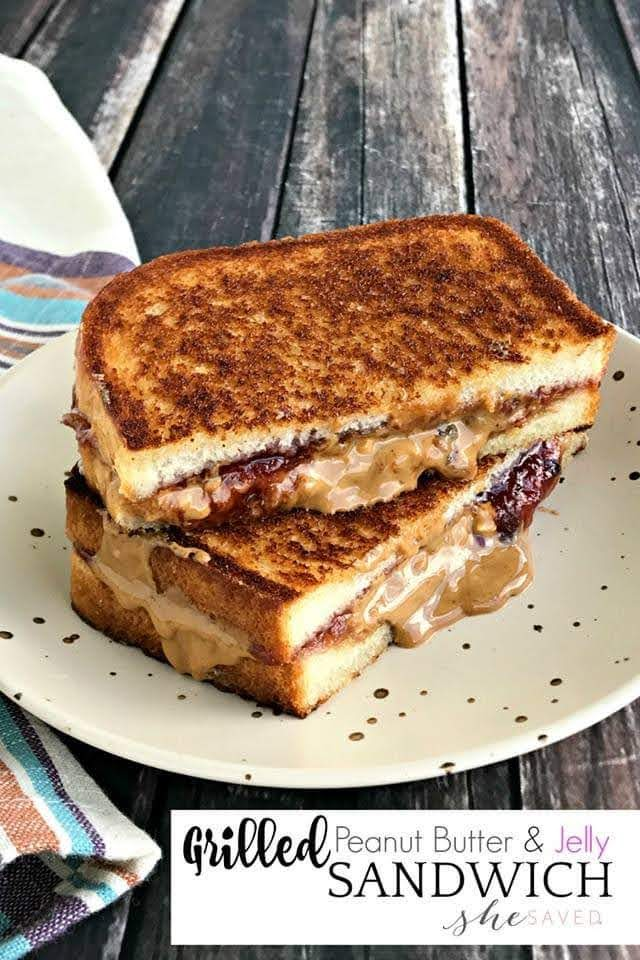

Grilled Peanut Butter and Jelly

Enjoy a delicious Grilled Peanut Butter and Jelly Sandwich!
There is no other way to eat a peanut butter and jelly sandwich. Once you eat one grilled, you will NEVER want to eat it the normal way again!!
Indulge in the perfect fusion of sweet and savory with our grilled peanut butter and jelly sandwich recipe. The warm, crispy exterior contrasts beautifully with the gooey, melty peanut butter and jelly filling for a mouthwatering treat
Ingredients
- Bread Slices
- Peanut Butter
- Jelly of your choice
- Butter or Margarine for Grilling
Steps
- Spread peanut butter on bread
- Spread Jelly on bread
- Butter the exterior of the outside of bread slices
- Heat a skillet or pan
- Carefully place the prepared sandwich in the skillet and let it cook for about 2-4 minutes on each side. Check the bottom periodically to ensure it doesn't burn. The sandwich is ready when both sides are golden brown, and the cheese has melted.
- Remove and serve!